컴퓨터그래픽스운용기능사 (2009-07-12 기출문제)
1과목: 산업디자인 일반
1. 비슷한 성질을 가진 요소들은 떨어져 있다 하더라도 덩어리져 보이는 게슈탈트 법칙은?
- 근접의 법칙
- 유사의 법칙
- 폐쇄의 법칙
- 연속의 법칙
(정답률: 68%)

2. 브레인스토밍에 대한 설명 중 가장 거리가 먼 것은?
- 오즈번(오스본)에 의해 1930년대 후반에 제안된 아이디어 발상법이다.
- 토의 그룹을 만들어 제약이 없는 상태에서 자유롭게 아이디어를 내는 방법이다.
- 각자의 아이디어를 토의를 통해 선별하고 기존의 아이디어를 보완하는 역할로 사용된다.
- 이 방법을 진행하는 데 필요한 기본원칙에는 비평은 금물, 많은 양의 아이디어 요구 등이 있다.
(정답률: 74%)
3. 다음중 수직선에 대한 느낌으로 가장 알맞은 것은?
- 안정감, 친근감, 평화스러운 느낌
- 엄숙함, 강직함, 긴장감, 준엄한 느낌
- 움직임, 활동감, 불안정한 느낌
- 우아하고 부드러운 느낌
(정답률: 82%)
4. 다음 중 반복, 점이, 방사 등에 의해 동적인 활기를 느낄수 있는 디자인 원리는?
- 조화
- 리듬
- 비례
- 균형
(정답률: 80%)
5. 다음 중 디자인의 조건과 거리가 먼 것은?
- 합목적성
- 보편성
- 경제성
- 심미성
(정답률: 81%)
6. 다음 중 광고 기법과 가장 관련이 없는 것은?
- 티져 기법
- 스토리텔링 기법
- 이미지 기법
- 렌더링 기법
(정답률: 73%)
7. 현대 디자인의 새로운 전기를 마련하고 공업제품의 양질화와 규격화를 추구한 운동은?
- 아르누보
- 독일공작연맹
- 바우하우스
- 시세션
(정답률: 64%)
8. ‘구매시점광고’라고도 하는 것으로 소비자가 상품을 구매하는 장소에서 이루어지는 광고는?
- 디스플레이
- P.O.P 광고
- 신문광고
- 상품광고
(정답률: 84%)
9. 실내 디자인의 실내 입면도에서 표현되어야 할 내용과 거리가 먼 것은?
- 문과 창의 위치
- 붙박이장 몰딩, 걸레받이
- 건물의 지붕과 천장 구조
- 벽체 구성
(정답률: 53%)
10. 중세 건축 디자인의 특징으로 볼 수 없는 것은?
- 성당 건축이 가장 큰 관심사 였다.
- 높은 첨탑과 높은 천장을 건축하려 했다.
- 채광면이 확대되어 다채로운 스테인드 글라스가 높은 창에 끼워졌다.
- 신의 이름에 가리워진 인간의 본질을 되찾으려 노력 하였다.
(정답률: 86%)
11. 실내디자인의 기본요소 중 인간의 접촉 빈도가 가장 높은 것은?
- 벽
- 바닥
- 천장
- 기둥
(정답률: 89%)
12. 다음 그림의 본문(Body Copy)은 어떤 형식에 속하는가?
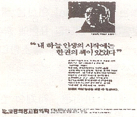
- 보도형식
- 대화형식
- 풍자적 형식
- 독백형식
(정답률: 80%)
13. 다음 중 길이와 너비를 가지며, 넓이는 있으나 두께는 없는 것은?
- 면
- 명암
- 색채
- 질감
(정답률: 88%)
14. 제품 디자인에서 제품의 완성 예상도는?
- 랜더링(rendering)
- 스크래치 스케치(scratch sketch)
- 아이디어 스케치(idea sketch)
- 일러스트레이션(illustration)
(정답률: 85%)
15. 캘린더에 사용되는 타이포그래피 선택의 유의점과 거리가 가장 먼것은?
- 쉽게 인지되는지의 가독성
- 숫자와 숫자 사이의 간격을 가독성의 입장에서 고려
- 화려하고, 튀도록 고려하여 선정
- 일러스트레이션과 조화를 이룰 수 있는 서체의 선정
(정답률: 88%)
16. 실내 디자인은 여러 단계에 걸쳐 진행된다. 디자인 의도를 확인하고 공간의 재료나 가구, 색채 등에 대한 계획을 시각적으로 제시(Presentation)하는 과정은?
- 기획 단계
- 설계 단계
- 시공 단계
- 사용 후 평가 단계
(정답률: 60%)
17. 다음 중 디자인 경영자의 역할과 거리가 먼 것은?
- 디자인의 조형적 문제해결에 대한 스페셜리스트
- 조직운영에 관한 모든 의사결정시 결단적 역할수행
- 디자인 조직의 내·외부로부터 정보를 받아들이고 전달해 주는 역할
- 디자인 조직 내·외부의 사람들과 원만한 인간관계구축
(정답률: 55%)
18. 다음 중 영상디자인 분야에 대한 설명으로 바른 것은?
- 전문 직업으로서 제품디자인이 등장한 것은 1945년 이후이다.
- DM은 일반적으로 구매시점광고라고 불리고 있다.
- 타이포그래피는 단순화된 그림에 의하여 대상의 성질이나 그 사용법을 표시하는 것이다.
- 홀로그램은 물체로부터 날아오는 빛의 파동을 레이저 장치를 이용하여 재생한 영상을 말한다.
(정답률: 67%)
19. 다음 중 시장 세분화의 주요 변수로 가장 거리가 먼 것은?
- 종교적 변수
- 지리적 변수
- 인구통계적 변수
- 행동특성적 변수
(정답률: 78%)
20. 일반적인 디자인과정은 문제분석, 문제해결안 도출, 문제 해결안 평가, 문제해결안 실현의 순서로 진행될 수 있다. 다음 중 문제분석 단계에 포함되지 않는 것은?
- 문제 인식
- 정보수집
- 아이디어도출
- 문제 해명
(정답률: 57%)
2과목: 색채 및 도법
21. 다음 입체의 정투상도가 올바른 것은?
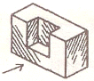
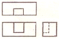
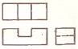
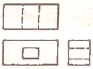
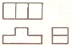
(정답률: 85%)
22. 색의 삼속성 중 색의 순수한 정도, 색채의 포화상태, 색채의 강약을 나타내는 성직은?
- 색상
- 명도
- 채도
- 명암
(정답률: 74%)
23. 다음 그림과 같이 각을 이등분할 때 가장 먼저 구해야 할 것은?
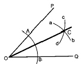
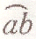
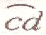
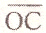
(정답률: 81%)
24. 배색에 따른 느낌 중에서 유사 색상의 배색에서 느낄 수 있는 것끼리 묶은 것은?
- 온화함, 협조적, 상냥함
- 화합적, 정적임, 강함
- 똑똑함, 생생함, 시원함
- 간결함, 동적임, 화려함
(정답률: 81%)
25. 다음 그림과 같은 원의 투시도법은?
- 4 점법에 의한 도법
- 6 점법에 의한 도법
- 8 점법에 의한 도법
- 12 점법에 의한 도법
(정답률: 63%)
26. 다음 중 중성색끼리 짝지어진 것은?
- 빨강, 노랑
- 녹색, 청록
- 연두, 자주
- 주황, 파랑
(정답률: 73%)
27. 색의 동화 현상에 관한 설명 중 틀린 것은?
- 주변색과 동화되어, 색이 만나는 부분이 좀 더 색상대비 효과가 강하게 나타난다.
- 어떤 색이 다른 색에 둘러싸여 있을 때, 둘러싸여 있는 색이 둘러싸고 있는 색에 가깝게 보이는 현상이다.
- 베졸드가 이 효과에 흥미를 갖고 패턴을 고안한 것이 베졸드 효과이다.
- 일반적으로 색상 면적이 작을 때나, 그 색 주위의 색과 비슷할 경우 동화가 일어난다.
(정답률: 52%)
28. 채도를 낮추지 않고 어떤 중간색을 만들어 보자는 의도로 화면에 작은 색점을 많이 늘어놓아 사물을 묘사하려고 한 것에 속하는 것은?
- 가산 혼합
- 감산 혼합
- 병치 혼합
- 회전 혼합
(정답률: 80%)
29. 다음중 지각적으로 고른 강도의 오메가 공간(색 공간)을 통한 색채 조화론을 주장한 사람은?
- 문. 스펜서
- 오스트발트
- 비렌
- 먼셀
(정답률: 71%)
30. 제도에 쓰이는 문자의 크기는 무엇으로 나타내는가?
- 문자의 굵기
- 문자의 높이
- 문자의 기울기
- 문자의 너비
(정답률: 72%)
31. 다음 그림과 같은 전개도의 다면체는?
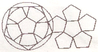
- 정사면체
- 정팔면체
- 정십면체
- 정십이면체
(정답률: 75%)
32. 먼셀표색계의 색상 구성에 대한 설명으로 옳은 것은?
- 8 색상을 각각 3색상으로 세분, 기본 24색상을 정함
- 12색상을 각각 2색상으로 구분, 기본 24색상을 정함
- 스펙트럼의 7색상에 중간색을 추가, 14 색상을 정함
- 주요 5색상에 중간색을 추가, 기본 10색상을 정함
(정답률: 58%)
33. 제 3각법에서 눈과 물체, 투상면의 순서가 올바른 것은?
- 눈 → 물체 → 투상면
- 투상면 → 물체 →눈
- 물체 → 눈 → 투상면
- 눈 → 투상면 → 물체
(정답률: 71%)
34. 어두운 무채색 바탕 위에 있는 유채색 문양은 어떻게 보이는가?
- 어둡게 느껴진다.
- 강하게 부각된다
- 희미하게 부각된다.
- 더욱 탁하게 느껴진다.
(정답률: 80%)
35. 다음 색의 혼합 중 색료의 혼합에 해당하는 것은?
- RED + GREEN = YELLOW
- BLUE + RED = MAGENTA
- MAGENTA + YELLOW = RED
- RED + GREEN + BLUE = WHITE
(정답률: 54%)
36. 다음 그림과 같은 투시도법은?
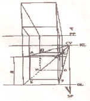
- 1소점법
- 2소점법
- 3소점법
- 공간투시도법
(정답률: 63%)
37. 감광요인에 대한 설명 중 잘못된 것은?
- 황-청, 적-녹 등의 차이를 볼 수 있는 것은 추상체의 역할이다.
- 추상체와 간상체가 동시에 함께 활동하는 것을 박명시라고 한다.
- 닭은 추상체만 있어 야간에는 활동할 수가 없다.
- 색순응은 물체색을 오랫동안 보면 색의 지각이 강해지는 현상이다.
(정답률: 56%)
38. 다음 중 성격이 다른 하나는?
- 혼합효과
- 전파효과
- 동일효과
- 줄눈효과
(정답률: 39%)
39. 색명에 관한 설명 중 가장 올바른 것은?
- 색명은 체계화되고 정확성을 가질 필요가 없다.
- 모든 색명은 인명 또는 지명에서 나온 것
- 색명의 어원은 모두 동물, 식물 등 자연을 대상으로 하여 명칭 지워졌다.
- 색명은 크게 관용 색명과 일반 색명으로 구분된다.
(정답률: 76%)
40. 아래 도면 내용에서 형상 기호의 의마가 옳은 것은?
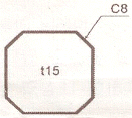
- 모따기 : 8 , 테이퍼 : 15
- 모따기 : 8 , 두께 : 15
- 모깍기 : 8 , 테이퍼 : 15
- 모깍기 : 8 , 두께 : 15
(정답률: 69%)
3과목: 디자인 재료
41. 원래 상태로는 물체에 염착되는 성질이 없지만 전색제에 의해 물체에 고착되는 도장 도료는?
- 염료
- 안료
- 용제
- 첨가제
(정답률: 58%)
42. 컬러 네거티브 필름으로 노란색(Yellow)의 피사체를 촬영하여 현상하면 이 피사체는 필름 상에 어떤 색으로 나타나는가?
- 청색(Blue)
- 녹색(Green)
- 적색(Red)
- 노란색(Yellow)
(정답률: 62%)
43. 다음 중 물을 사용하여 명도를 조절하며 가장 맑고 투명한 효과를 얻을 수 있는 것은?
- 유화 물감
- 수채화 물감
- 컬러 마커
- 포스터 컬러
(정답률: 84%)
44. 종이의 방향성에 대한 설명 중 틀린 것은?
- 어느 방향으로 당겨도 강해야만 이상적이다.
- 제작 과정에서 섬유의 배열에 따라 방향성이 생기게 된다.
- 세로 방향은 약하고, 가로 방향은 강하게 된다.
- 방향성에 의한 강약의 차이가 적게 제작되어야 한다.
(정답률: 65%)
45. 얇고 흰색으로 성서나 사전의 인쇄에 사용되는 종이는?
- 글라싱지
- 라이스지
- 인디아지
- 콘덴서지
(정답률: 67%)
46. 다음의 설명에 해당하는 목재의 상처는?
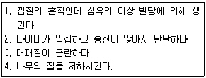
- 갈라짐
- 옹이
- 껍질박이
- 썩정이
(정답률: 61%)
47. 귀금속을 도금할 때 너무 많은 전류가 흘러서 거친 도금이 된 것으로 갈색, 무광색, 백색, 회흑색 석출물로 나타나는 도금 결함의 명칭은?
- 무도금(bare spot)
- 탄도금(burning)
- 피트(pit)
- 얼룩(stain)
(정답률: 73%)
48. 재료의 일반적 성질 중 응력이란?
- 외열에 대한 내열 전위력
- 외력에 대한 내부의 저항력
- 내부의 저항력에 대한 외력
- 내부열에 대한 주위의 온도변화
(정답률: 65%)
4과목: 컴퓨터 그래픽스
49. 3차원 모델링 및 렌더링 표현시 보다 속도를 빠르게 개선하기 위한 방법이 아닌 것은?
- 물체를 중첩시켜 표현하는 불(Boolean) 연산을 줄인다.
- 카메라와 거리가 먼 쪽의 모델이라도 디테일 표현에 충실한다.
- 텍스쳐 맵의 크기를 가능한 범위 내에서 축소한다.
- 광원(조명)의 수를 최소화 한다.
(정답률: 71%)
50. 그래픽 작업시 화면상에 나타난 아이콘, 객체의 선택을 위하여 마우스의 움직임과 동일하게 움직이는 화살표 또는 십자모양의 그래픽 표현방법은?
- 윈도우(Window)
- 메뉴(Menu)
- 툴(Tool)
- 커서(Cursor)
(정답률: 88%)
51. 컴퓨터 내부 연산처리방법에는 보통 8, 16, 32, 64 비트가 있는데, 이들을 동시에 전송할 수 있는 데이터 크기를 제한하여 신호를 주고 받기 위한 역할을 수행하는 것은?
- CPU
- ROM
- RAM
- BUS
(정답률: 65%)
52. IBM사와 제너널 모터스(GM : General Motors)사가 공동으로 자동차 설계를 위한 시스템 DAC-1을 개발하여 CAD/CAM 시스템을 만든 컴퓨터 그래픽스 세대는?
- 제1세대
- 제2세대
- 제3세대
- 제4세대
(정답률: 54%)
53. 다음 3차원 그래픽의 모델링 중 물체를 선으로만 표현하는 방법은?
- 서피스 모델링
- 와이어 프레임 모델링
- 솔리드 모델링
- 프랙탈 모델링
(정답률: 84%)
54. 다음 중 정보 표현의 최소 단위는?
- 비트(Bit)
- 바이트(Byte)
- 워드(Word)
- 문자(Character)
(정답률: 82%)
55. 일러스트레이터 및 포토샵 프로그램에서 오브젝트의 불투명도를 조절하는 명령은?
- fade
- pressure
- exposure
- opacity
(정답률: 82%)
56. 현재의 컴퓨터 운영체제에서 대부분 사용되고 있는 방식으로, 그림을 기반으로 사람과 컴퓨터를 연결해 주는 일종의 맨-머신 인터페이스(Man-Machine Interface)는?
- CUI(Character User Interface)
- GUI(Graphical User Interface)
- VRUI(Virtual Reallity User Interface)
- CAI(Computer Assisted Instruction)
(정답률: 73%)
57. 인쇄를 위하여 Quark-Xpress나 Page Maker 같은 DTP 전용 프로그램에서 사용할 그래픽 이미지 저장시 선택하는 컬러 모드는?
- RGB 모드
- CMYK 모드
- Gray Scale 모드
- Index 모드
(정답률: 67%)
58. 포토샵 프로그램에서 Lighting Effects 필터를 적용 할 때, 적합한 컬러 모드는?
- RGB 모드
- CMYK 모드
- Gray Scale 모드
- Index 모드
(정답률: 66%)
59. 렌더링한 이미지의 경계선 부분이 매우 거칠게 보여질 때 이런 경계가 뚜렷한 영역의 픽섹들을 혼합하여 부드러운 선을 형성하는 교정 기법은?
- Shading
- Glowing Surface
- Anti aliasing
- Fog
(정답률: 72%)
60. 컴퓨터 모니터상의 컬러와 인쇄, 출력물의 컬러 차이가 생기는 원인이 아닌 것은?
- 모니터 색상을 구성하는 컬러와 인쇄잉크의 컬러 구성이 다르기 때문이다.
- 모니터의 색상표현영역(Color Gamut)과 인쇄잉크의 표현 영역이 다르기 때문에
- 모니터와 프린터의 캘리브레이션(Calibration)이 부정확 하기 때문이에
- 모니터의 이미지 전송속도와 프린터의 처리속도가 다르기 때문에
(정답률: 68%)